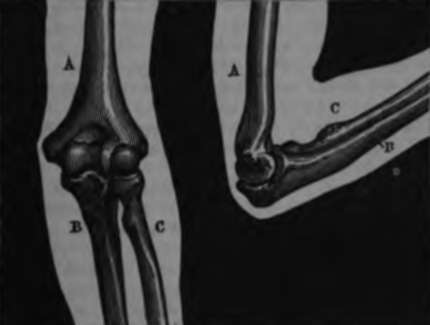
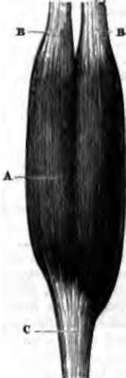

Joints
Description
This section is from the book "Wonders Of The Human Body", by Auguste Le Pileur. Also available from Amazon: Wonders of the Human Body.
Joints
The bones are attached to each other, either by their extremities or their sides, in such a manner as to permit freedom of motion to a greater or less extent between the different parts of the skeleton and of the body. Held together by a sort of cog-wheel system, by the fitting of a projection into an appropriate cavity, or by juxtaposition, they are maintained in connection either by the reciprocal attachments of these projections, or by envelopes—the articular capsules—and by ligaments, constant in their nature, but varying in form and disposition, according to the different movements which they are designed to permit and insure.
This assemblage, this connection of the bones, is termed a joint. Joints are classed according to the form of the articulating surfaces, and according to the extent and variety of the movements produced by them. The bones of the skull are attached by the notches on their edges; these are termed the sutures of the skull. They ossify with age, and may be considered temporary joints, or rather a transition between the separation of the bones and their unification. The other joints, on the contrary, are permanent, and designed to leave to the bones which they unite a mobility which continues during life.
In some of the joints the surfaces are nearly plane or flat; others present projections with corresponding depressions; sometimes there is a segment of a spheroid upon which the cavity which receives it moulds itself; sometimes a cylinder which turns upon its axis in a ring, or a pulley-groove around which slides an apophysis, or a mortise in which a tenon is set.
Here, as in all the works of nature, we admire the inexhaustible variety of form and of mechanism. Doubtless there exists between certain articulations resemblances which permit them to be classed together; but all are as distinct as the bones which they unite, and like them present diversity of character. Separately considered they astonish us no less by the multiplicity of detail in their mechanism, whether we examine the most complex or those whose surfaces present the least irregularity. In fact we nowhere find a uniform plan, and the projections as well as the depressions are curved in the most capricious manner.
These details of the general outline belong to no precise geometrical form; they are neither cubes nor spheres, neither cylinders, cones, nor pyramids, although in anatomical language these terms are applied to them. There is an assemblage in the same apophysis, or in the same cavity, of curved surfaces borrowed from the most widely differing solids, united under angles the most varied, and modelled on sinuosities which defy geometrical description.
In addition to these distinctive characters of the joints, we may mention others which are common to them all. All the joints have cartilages covering the bones which form them; all are kept together by special ligaments, and are lined with a synovial membrane, whose functions we shall subsequently describe.
The polish on the articular cartilages facilitates their sliding over each other, and lessens the friction of the bony extremities, while their elasticity diminishes the pressure and deadens the shocks to which the joints are subject The thickness of these cartilages is proportioned to the motion and the pressure which they are designed to support, and it is greatest at the centre of the convexity of protuberances and on the borders of cavities. The articular cartilages never ossify, differing in this respect from those which, as in the thorax for example, maintain continuity and play the part of flexible bones. These last are ossifying cartilages. The others differing in structure, being without vessels, have been compared to the enamel on the teeth. In fact, they are composed, like that enamel and some other analogous productions, of an almost inorganic substance, and mechanical injuries are the only ones which they have to fear.
Wherever in the organism surfaces move over each other, they are covered with a membrane which secretes a fluid, differing in quality according as there is a sliding or rubbing of the organs. In the interior of the joints the membranes are termed synovial membranes, and secrete a fluid called synovia, because its physical characters resemble those of the white of an egg. The synovia is to the joints what oil is to the wheels of a machine; incessantly poured out upon the surfaces, it lubricates them, and renders the movement, already so easy owing to the polish of the cartilages, still more so; it increases the suppleness and elasticity of these last, which if they were not supplied with this oily fluid would soon be worn out, and motion would be impossible. This sometimes results from certain diseases, and sometimes also in old age.
We have said that the joints are united by ligaments. This term is applied to the bands or membranes composed of fibrous tissue, flexible and inextensible. The ligaments, which are in the form of bands, are sometimes parallel and sometimes interlaced, and placed either between the articular surfaces or around them. In the latter case their internal face is covered with intimately adherent synovial membrane. The ligaments are attached to the bones at a greater or less distance from the articular cartilage, and they adhere so strongly that it is easier to break the bone or the ligament than to tear it from the spot where it is planted. The membranous ligaments—capsulary ligaments or fibrous capsules—are like a circular band of which the two openings are fastened to the bones which they unite. The fibrous pads or cushions which run round the circumference of certain articular cavities are also considered as ligaments. They increase the depth of these cavities, and give greater solidity to their borders, upon which the osseous extremity received there exerts considerable pressure.
Fig. 12. Elbow-joint. a. Humerus. b. Ulna. c. Radius.
Such is the assemblage of apparatus comprised in the joints. The most perfect machine which man has ever been able to construct bears no comparison to the admirable mechanism of which we have just endeavoured to give a general idea, in the precision, delicacy, and variety of their organs or of their movements. Even in their most complicated parts, machines invented by man offer nothing but a simple mathematical precision, impossible to mistake, because all the surfaces are conceived and traced out geometrically. In the joints, on the contrary, all the lines and surfaces are vague and uncertain; and when we examine an articular extremity, the inferior extremity of the humerus for example, we shall at first be tempted to believe that the unsymmetncal projections and depressions, the incomplete grooves, and the undefinable irregularity of the whole, belong to a work spoiled or modelled at hazard by a confused mind; but on seeing the action of the elbow-joint when laid open by the anatomist, we discover that it is to this very irregularity of the bony extremities, to the multiplicity of detail, to the absence of symmetry, and to the more or less limited extent of their articulating surfaces, that the variety of movement is due, and we cannot sufficiently admire this assemblage, so complex, but yet so justly calculated to give to the movements of the fore-arm the greatest precision, strength, and rapidity, and to combine these movements with those of the arm and the hand.
And if we pass from the most mobile of these joints to those not at all or only slightly movable, the perfect coaptation of their surfaces, their powerful methods of union, the unity of movement of the bones, whether they take part in the motion or serve only as fulcrums, all seem to be as simple as possible in function, although the whole as well as the details presents the most delicate application of the laws of mechanics and statics. We may add that here as well as everywhere in the study of the works of nature, we see the organs develop themselves from the embryonic state to that of perfection, under the influence and in the exercise of their functions. But leaving out the inimitable results produced by life in natural creations, and considering them as inorganic bodies, the mechanism of the joints leaves far behind all the most ingenious productions of art or science.
The distance appears to us greater still when, instead of a combination of surfaces and the method of their union, we study the action of the muscles and the transformations which are incessantly taking place in the organs of digestion and respiration. In unveiling a part of these mysteries to man, the progress of science only increases his admiration. What would it be if life, that force of which he is conscious, and which he shares with all organized beings, should cease to be to him an impenetrable secret!
Fig. 13. Biceps muscle of the arm.
A. Body of the muscle. B. B. Superior tendons. C Inferior tendons.
Continue to:
- prev: Cartilage
- Table of Contents
- next: Muscles